We got three DIS 2026 works accepted! See you in Singapore!
Hong is a Human-Computer Interaction (HCI) researcher and computational designer based in Melbourne, Australia. She is currently a PhD candidate at the Exertion Games Lab, Monash University, supervised by Florian 'Floyd' Mueller, Don Samitha Elvitigala, and Phoebe Toups Dugas. Her research combines tangible artifacts, multisensory experiences, and wearable technologies to explore mutualistic relationships between humans and nature, and how interactive systems can foster more caring and ecologically aware ways of living.
News
I’m excited to share that we have one paper and one poster accepted to CHI 2026! Looking forward to seeing everyone in Barcelona, Spain.
I will be a program committee member of DIS 2026.
I will attend the Dagstuhl Seminar in Germany on “NatureHCI: Towards Designing Computer-Enriched Nature Experiences.”
Our DIS 2025 Late-Breaking Works have been accepted! Thanks to all the co-authors!
We got two CHI 2025 works accepted! See you in Yokohama!
I officially joined the Exertion Games Lab to begin my PhD journey exploring nature-based interactive experiences.
Publications (Selected)
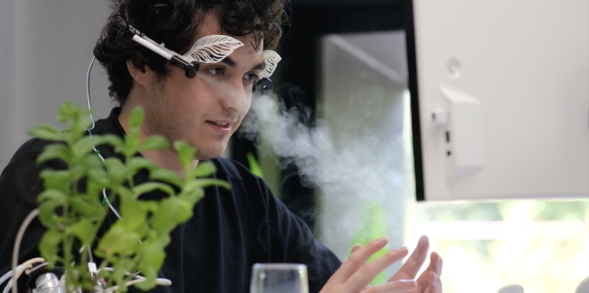
SymbioSip: Human-Plant Symbiosis through a Bidirectional Hydration System
DIS Companion 2026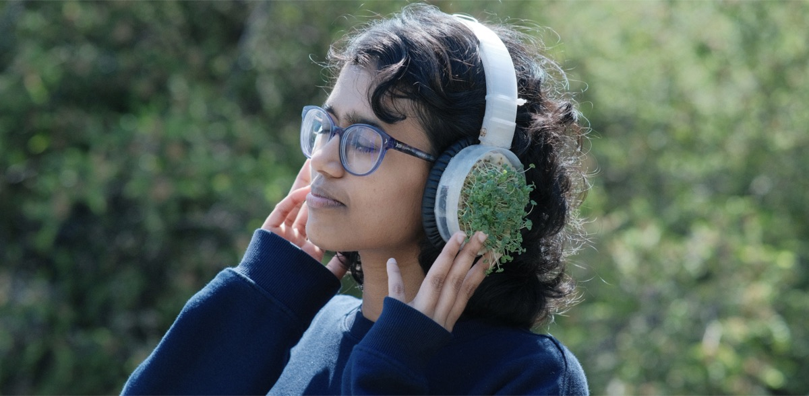
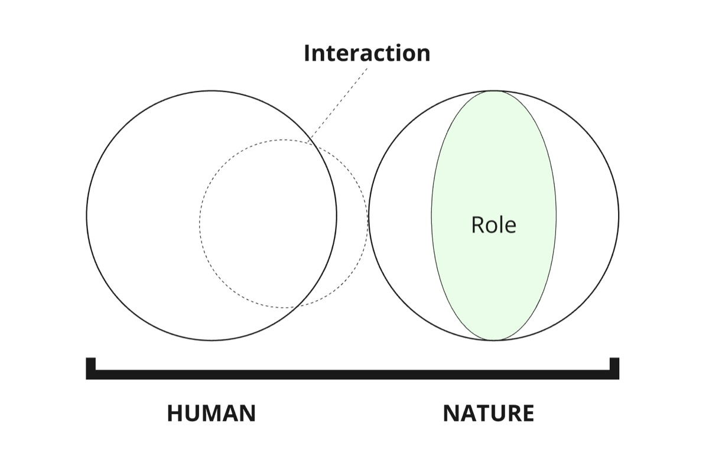
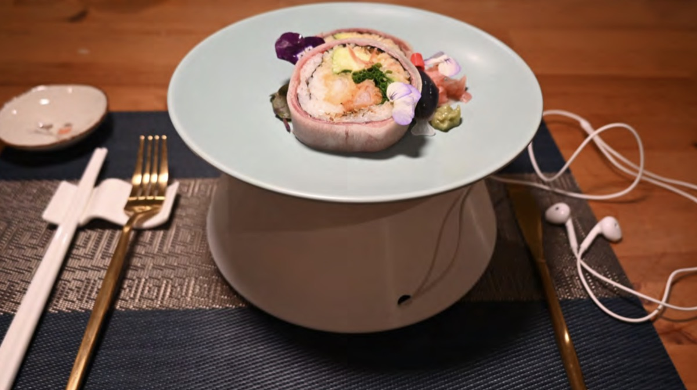
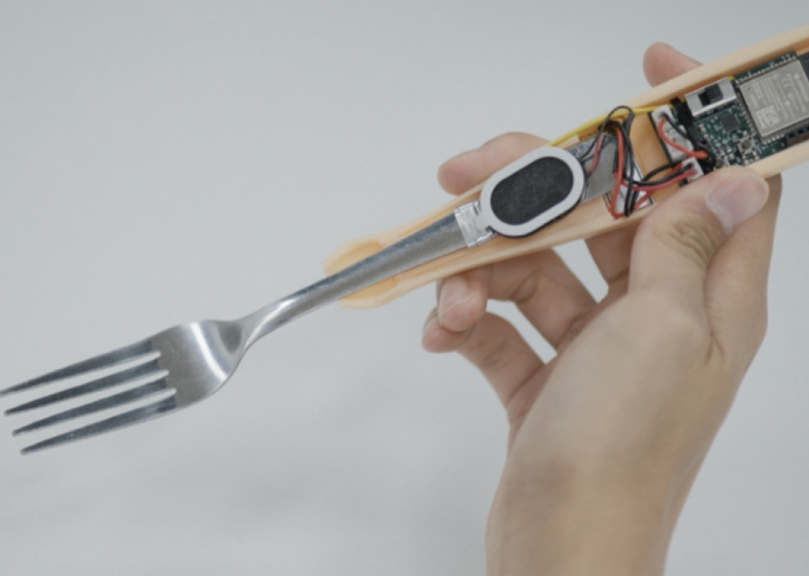
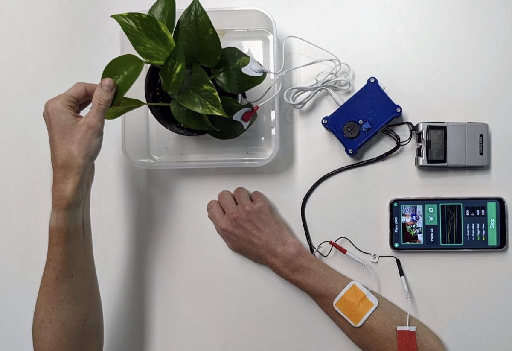
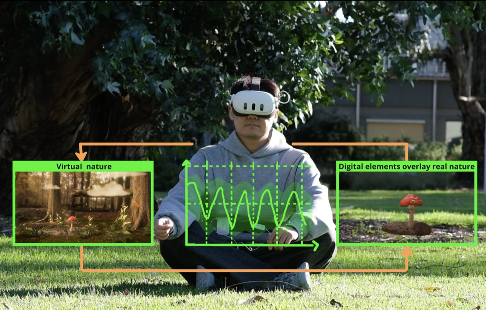
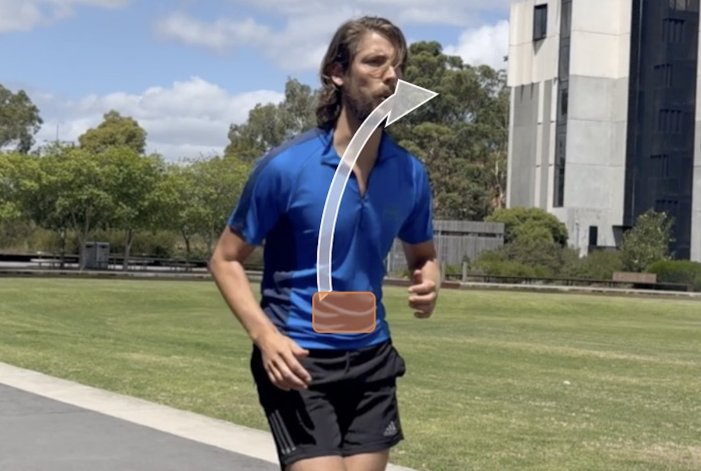
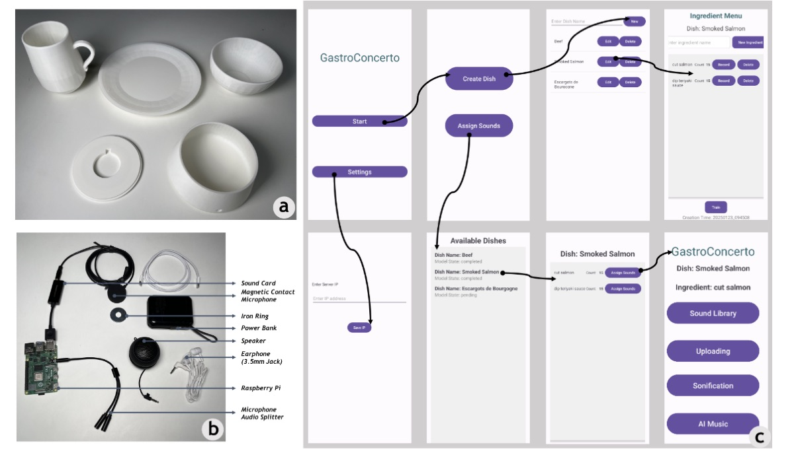
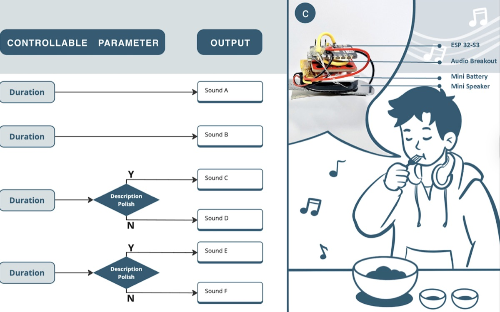
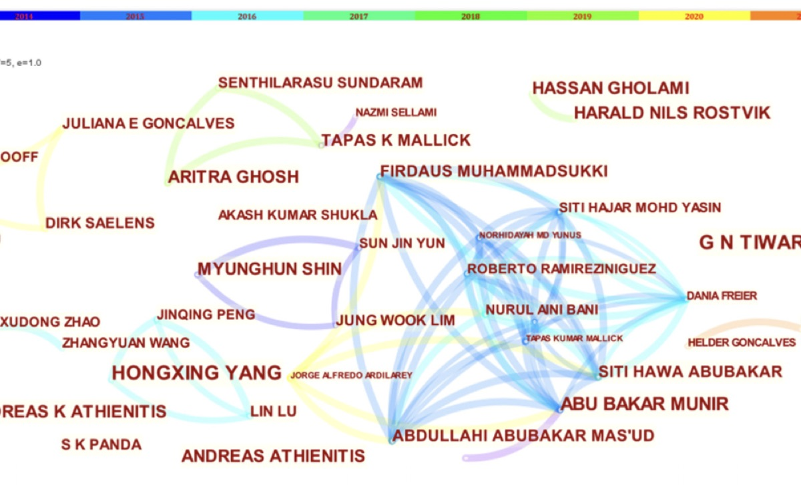